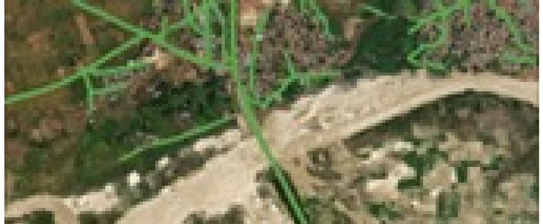
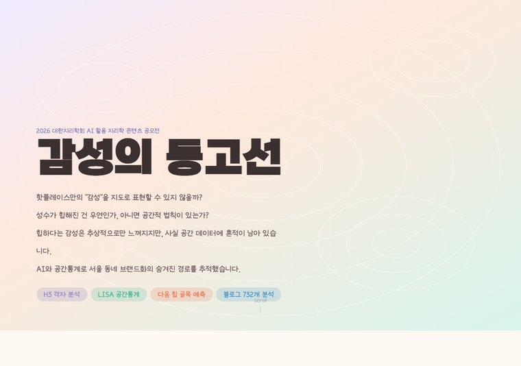
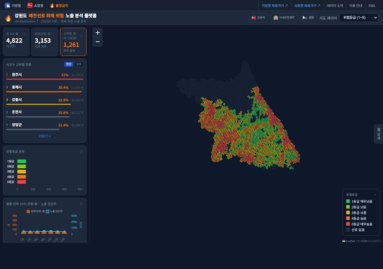
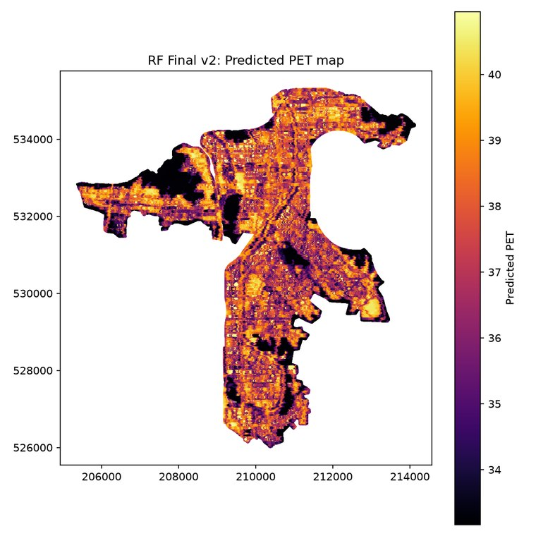
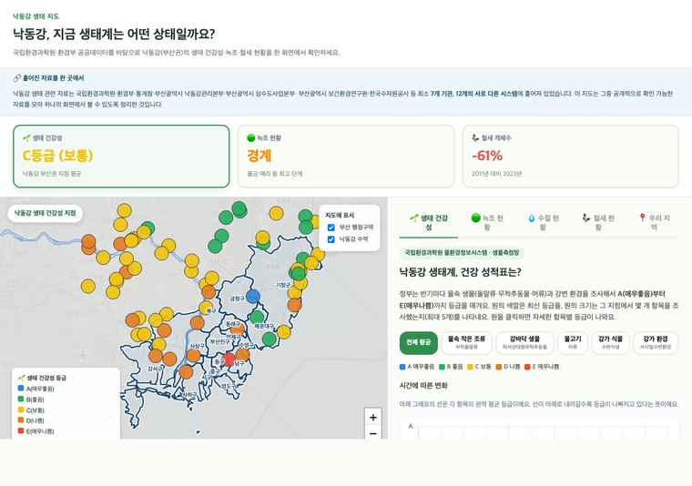

공간데이터사이언티스트

위성영상 딥러닝 기반 도로 자동 추출 · 최우수상
→ 클릭해서 보기

서울 동네 브랜드화의 공간 역학 · 우수상
→ 클릭해서 보기

기상청 기상 빅데이터 콘테스트
→ 클릭해서 보기

보행 열스트레스 분석 & GWRF 공간회귀 모델링
→ 클릭해서 보기
LightGBM 모델 · 성능 상위 15%
→ 클릭해서 보기

낙동강 생태 데이터 통합 · UN 청년 특별보고관
→ 클릭해서 보기
공간데이터 분석
ArcGIS Pro, ArcGIS Wayback Imagery, QGIS(UMEP/SOLWEIG), H3 헥사곤 인덱싱, 공간통계(Moran's I, LISA)
위성영상 처리
위성 이미지 처리 및 공간 매핑, Google Earth Engine, Sentinel-2/Landsat, DSM/DEM 전처리
머신러닝
Python 기반 머신러닝 모델 개발 — LightGBM, XGBoost, CatBoost, GWR/GWRF, SHAP
딥러닝
U-Net, ResNet 등 CNN 모델 전이학습 및 세그멘테이션
데이터 & 사무
Python, SQL, Claude API, Excel
공간 빅데이터 분석 및 시각화 경진대회
최우수상 · 2025.12.17 · 이화여자대학교
AI 활용 지리학 콘텐츠 공모전
우수상 · 2026.6.19 · 대한지리학회
이화여자대학교
지리교육전공(사회과교육과) · 컴퓨터공학 부전공(소프트웨어학부) · 2023.03–2028.02(예정) · 휴학 중
Rutgers University (교환학생)
2025.01 – 2025.06
이대부속고등학교
2020.03 – 2023.02 졸업
TOEIC 935 / TOEIC Speaking Lv.7(AM 180)
2026.02 취득
TOEFL iBT 4.5
2026.03 취득
정보처리기사 필기
2026.02 합격